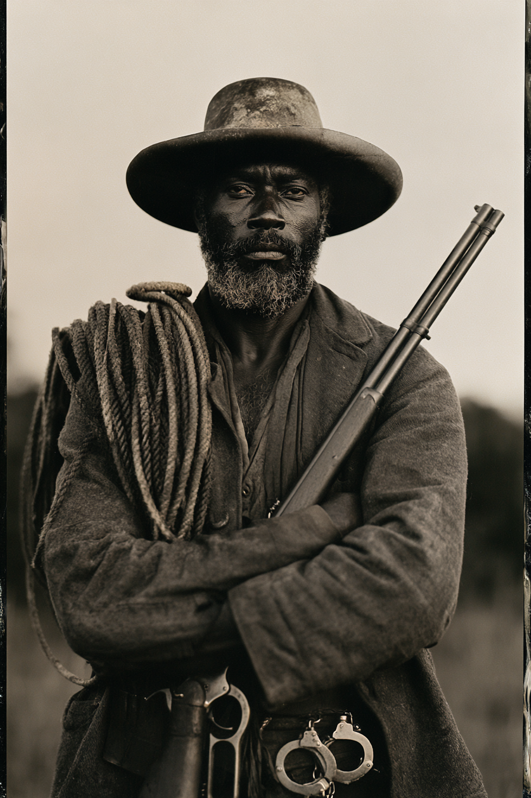

Archetyp: BOUNTY HUNTER (Kopfgeldjäger)
Er hat noch nie einen Mann tot eingeliefert, und er gedenkt mit dieser Bilanz zu sterben.
| Agility | d6 | 1 |
| Smarts | d8 | 2 |
| Spirit | d6 | 1 |
| Strength | d4 | 0 |
| Vigor | d6 | 1 |
| Skill | Attr. | Die | Pts. |
|---|---|---|---|
| Shooting | Agi | d8 | 4 |
| Survival | Sma | d8 | 3 |
| Riding | Agi | d6 | 2 |
| Notice | Sma | d6 | 1 |
| Fighting | Agi | d4 | 1 |
| Intimidation | Spi | d4 | 1 |
Hintergrund. Absalom wurde als Eigentum auf einer Hanffarm in Missouri geboren und lernte Spuren lesen, bevor er Buchstaben lesen lernte. Als der lange Krieg sich ’71 endlich selbst erwürgte, ging er westwärts ins Indianer-Territorium und heuerte als Posseman bei einem Bundesdeputy aus Fort Smith an — die weißen Deputies konnten der Fährte durch die Kiamichi-Niederungen nicht folgen, er schon, also zahlten sie ihm ein Drittel Anteil und ließen ihn bei den Pferden schlafen. Elf Jahre ritt er das, dann machte er sich selbständig, denn wer für sich selbst arbeitet, muss nicht erklären, warum er die Beute atmend zurückbringt. Er ist einundfünfzig, langsam im Reden und beunruhigend geduldig. Er reitet mit der Posse, weil eine Posse Zeugen bedeutet — und Zeugen sind das Einzige, was verhindert, dass der Gefangene eines Schwarzen „auf der Flucht erschossen“ wird, kaum dass sie die Stadt erreichen.
Aktuelles Kopfgeld. Wilbur „Sunday“ Kinch — 600 Dollar, tot oder lebendig, für den Mord an Deputy Marshal Owen Reddick. Absalom hat Kinch das Spurenlesen beigebracht. Jetzt flieht Kinch — und flieht absichtlich schlecht: Zweige auf Kniehöhe geknickt, Steine drei-und-eins gestapelt, ein Fetzen roter Flanell an einem Mesquite-Dorn. Das ist der private Fährtencode, den Absalom erfunden und genau einer lebenden Seele beigebracht hat. Kinch flieht nicht. Er führt. Die letzte Markierung war in einen Kuhschädel geritzt und bedeutete bring mehr Gewehre. Und der Haftbefehl wurde von dem Mann unterzeichnet, der Reddick nach Absaloms Überzeugung selbst erschossen hat.
Build. Geschicklichkeit W6, Verstand W8, Geist W6, Stärke W4, Konstitution W6 · Parade 4, Robustheit 5 Schießen W8, Überleben W8, Reiten W6, Bemerken W6, Kämpfen W4, Einschüchtern W4 Talente: Woodsman (Naturbursche), Alertness (Aufmerksamkeit), Guts (Mumm) Handicaps: Code of Honor (Ehrenkodex) — Major: lebendig oder gar nicht · Loyal — Minor · Cautious — Minor Ausrüstung: Winchester ’73 in .44-40, Colt Peacemaker, Lasso (so nimmt er sie tatsächlich fest — Kämpfen-Probe, Verstrickt bzw. Gefesselt bei Steigerung), Handschellen, gutes Pferd mit durchgesessenem Sattel. In der linken Brusttasche, in Ölzeug gewickelt: die Messinggürtelschnalle eines Jungen.
Aufhänger. Sonnenuntergang, Choctaw Nation, Herbst ’79. Ein Räucherhaus, keine Laterne, eine Gestalt, die schnell zu einem Regal greift. Absalom feuerte zweimal. Die Gestalt war ein vierzehnjähriger Junge namens Israel Doe, der nach einer Lampe griff, und die Schnalle an seinem Gürtel ist die Schnalle in Absaloms Tasche. Kein Lebender weiß davon. Deshalb bringt er sie lebend ein: Buße, als Prinzip verkleidet. In letzter Zeit ist die Schnalle warm. Zweimal wachte er im Morgengrauen auf und fand barfüßige Abdrücke in der Asche seines Feuers, zu klein für einen Mann, in einem langsamen Kreis um seinen Schlafplatz — ohne Spuren, die hin- oder wegführen.
Warum es Spaß macht. Du bist der Grund, warum die Gruppe überhaupt irgendetwas findet, und gleichzeitig die Bremse für ihre schlimmsten Instinkte. Und einmal pro Sitzung legt der stille alte Mann auf neunzig Meter an, und der Tisch erinnert sich, warum er mit einundfünfzig noch lebt.
Regelgrundlage: Regelnotizen · Archetyp-Notizen